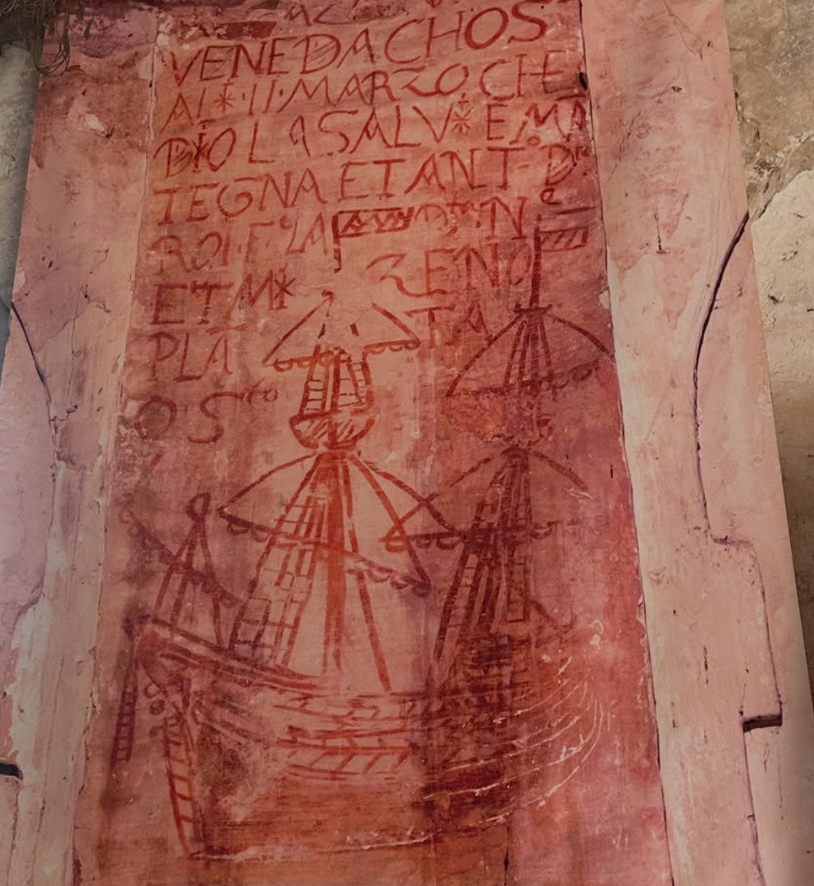

The Tempest at Lazzaretto Nuovo
Ariel · Directed by Irwin Appel
In 2026 I had the great fortune of playing Ariel Prague Shakespeare's production of The Tempest. We became the first-ever theatrical production on the Lazzaretto Nuovo Island -- a small, desolate island in the Venetian Lagoon.
About Lazzaretto Nuovo
Lazzaretto Nuovo served as the quarantine space for sailors during Shakespeare's time. We staged the show inside the main building, which the sailors stayed during their isolations. The show is surrounded by original scribbles from the ancient times and artifacts that dated back to Shakespeare's time.
